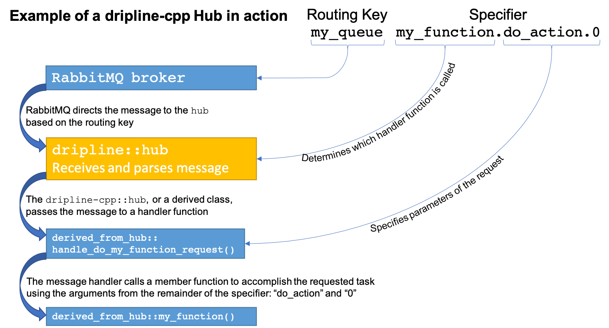

Dripline Library¶
The “end-user” aspects of the dripline-cpp API can be divided into core dripline implementations:
Endpoint: receives messages and acts on them
Service: primary connection with the broker; can have child endpoints and is an endpoint itself
Messages: concrete implementations of the request, reply, and alert message concepts
and useful extensions:
Hub: service that dispatches requests to C++ functions (or function-like objects)
Monitor: listens to messages on a mesh (primarily used by the Monitor)
Relayer: asynchronously sends messages
There are also a number of classes that implement various features of the above classes:
Core: interface for the RabbitMQ client library; interface includes interacting with the broker and for sending and receiving messages
Heartbeater: implements the heartbeat behavior
Listeners: listen for AMQP messages (dripline message chunks or whole messages)
Receivers: collect dripline message chunks and assembles them into complete messages
Scheduler: executes scheduled events
Specifier: parses specifier strings
Version Store: stores version information for a particular application context
Core Behavior¶
Agent¶
An agent takes command-line arguments and sends messages accordingly. It is primarily used
for the Dripline Agent application.
Endpoint¶
The endpoint is the basic dripline object capable of handling requests.
An implementation of a particular endpoint should be a class that inherits from endpoint.
Service¶
The service class implements the fundamental “service” concept in dripline:
it’s the basic work unit in a dripline mesh. It maintains the connection to the broker
that’s used by one or more endpoints, and it is itself an endpoint.
It’s range of capabilities are largely defined by the classes it inherits from:
coreendpointlistener_receiverheartbeaterscheduler
The interface for running a service consists of three functions:
start()listen()(blocking)stop()
A service can have both synchronous and asynchronous child endpoints. With the former, requests are handled synchronously with the recieving of messages and with processing messages bound for itself. With the latter, requests are passed to the appropriate endpoint, which handles them in its own thread.
Messages¶
The message classes encapsulate the information in dripline messages as C++ objects.
The set of classes comprise the base class, message, and the concrete classes msg_alert,
msg_reply, and msg_request.
Message objects know how to convert between themselves and AMQP message objects.
Useful Extensions¶
Hub¶
A hub is a service that is setup to receive requests and maps specifiers to C++ handler functions. This allows you to, for example, receive requests intended for a variety of destinations within a single application and have the requests distributed accordingly.
Monitor¶
A monitor listens for messages sent to a particular set of keys and prints them to the terminal.
It is used primarily for the Dripline Monitor application.
Relayer¶
A relayer allows a user to asynchronously send messages. Replies can be waited on in a thread-safe way
(either in the user’s thread or by setting up a thread to wait and then do something once it arrives)
or ignored.
Other Classes¶
Core¶
The core class provides an interface for the basic AMQP functionality. It wraps the
more general RabbitMQ API in a dripline-specific interface.
The class includes a number of static utility functions for interacting with the broker.
It further includes a complete interface for sending messages.
Heartbeater¶
The heartbeater class is used by service or any other client code
to repeatedly sends a heartbeat on a particular time interval.
The heartbeat is an alert sent to a pre-determined routing key, which is given as a parameter to the
execute() function. The interval for sending the heartbeats is f_heartbeat_interval_s,
which is in seconds. The default interval is 60 s.
Listeners¶
A listener is a class capable of listening on an AMQP channel for AMQP messages,
which represent either a dripline message chunk or an entire dripline message.
The listener class provides the basic framework for doing that.
The typical use case involves at least two threads:
1. A listener gets messages from the AMQP channel (using listen_on_queue(),
e.g.
serviceorendpoint_listener_receiver) and callsreceiver::handle_message_chunk()
- A receiver has a timing thread waiting for multiple message chunks (if relevant);
when the message is complete,
receiver::process_message()is called.
listener_receiver is a convenience class that brings together listener and concurrent_receiver.
endpoint_listener_receiver is a decorator class for a “plain” endpoint:
it adds listener_receiver capabilities, allowing it to act as an asynchronous endpoint of a service.
Receivers¶
A receiver is able to collect Dripline message chunks and reassemble them into a complete dripline message.
Dripline messages can be broken up into multiple chunks, each of which is transported as an AMQP message. A receiver is responsible for handling message chunks, storing incomplete dripline messages, and eventually processing complete dripline messages.
The receiver class contains an interface specifically for users waiting to receive reply messages: wait_for_reply().
The concurrent_receiver class allows client code to concurrently receive and process messages
(i.e. in separate threads).
Scheduler¶
The scheduler executes scheduled events.
An event is an executable object (e.g. a std::function object, or a lambda)
with the signature void ().
Events can be one-off, scheduled for a particular time, or they can be repeating, scheduled with an interval starting at a particular time. The default start time for repeating events is “now.”
Specifier¶
Message specifier strings of the form "my.favorite.command" are tokenized
into an array of strings: ["my", "favorite", "command"].
Version Store¶
The version_store is a singleton class to store all version information relevant in any particular context.